Des faits étonnants qui comptent
Les chiffres derrière le travail. Chaque fait a sa source.
Bannière : composition d'images de la NASA — coucher de Terre vu d'Orion (Artemis II), Hubble eXtreme Deep Field (NASA/ESA), Neptune par Voyager 2 (NASA/JPL)
Tous les faits
1,4 téraoctet par jour
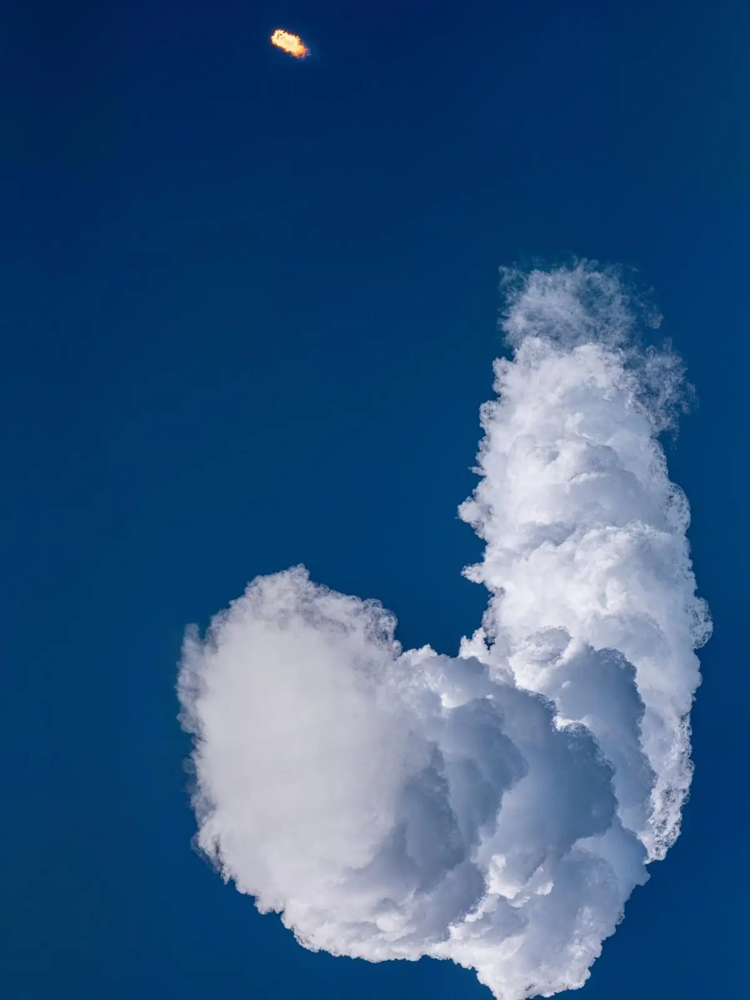
Image : NASA/Sydney Rohde
Le télescope spatial Roman de la NASA renvoie 1,4 téraoctet de données par jour, le plus de toutes les missions d'astrophysique de la NASA à ce jour.
Page : Télescope spatial Roman (NASA)
Source : NASA, Roman launch release
150 fois plus sûr
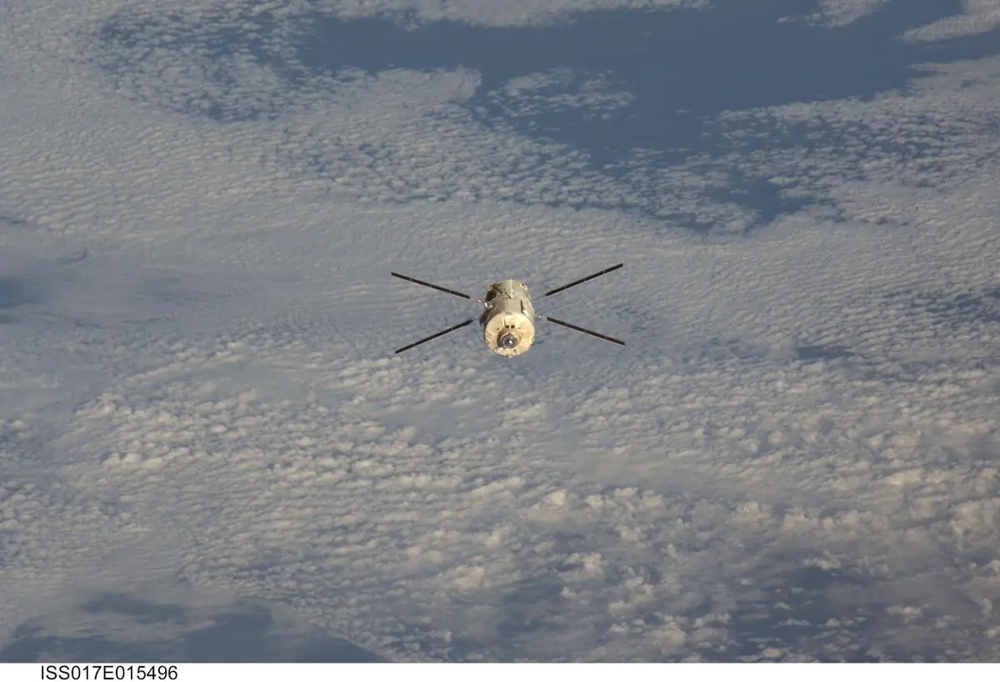
Image : NASA
La rentrée assistée d'Aeolus, une première de l'ESA, a divisé par 150 un risque déjà faible de chute de débris.
Page : Rentrée assistée d'Aeolus (ESA)
Source : ESA, Final images before Aeolus demise
49 survols d'une lune océan
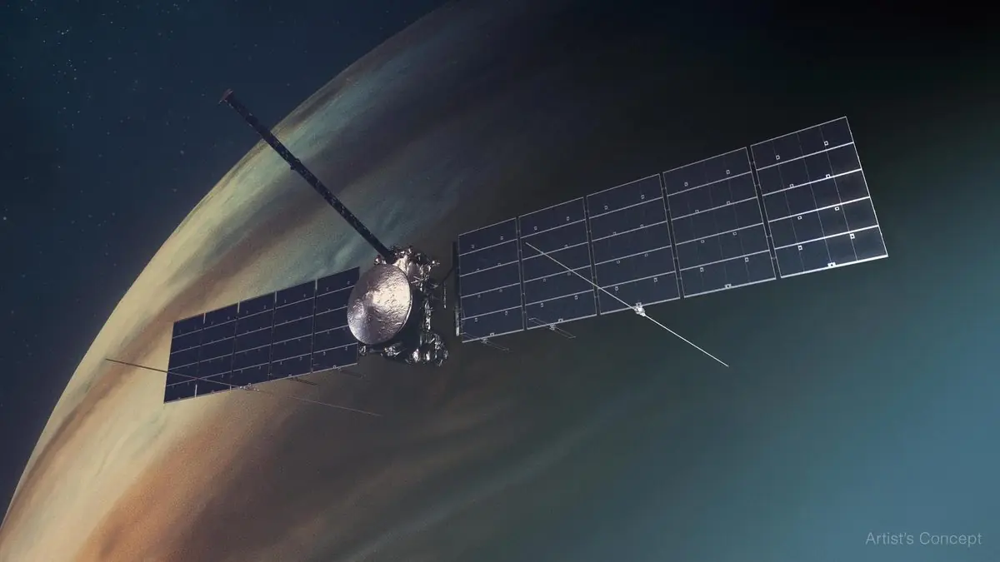
Image : NASA/JPL-Caltech
Europa Clipper de la NASA parcourra 1,8 milliard de miles jusqu'à Jupiter et survolera 49 fois la lune océan Europe.
Page : Europa Clipper (NASA)
Source : NASA, Europa Clipper
Un coronographe qui ne cligne jamais
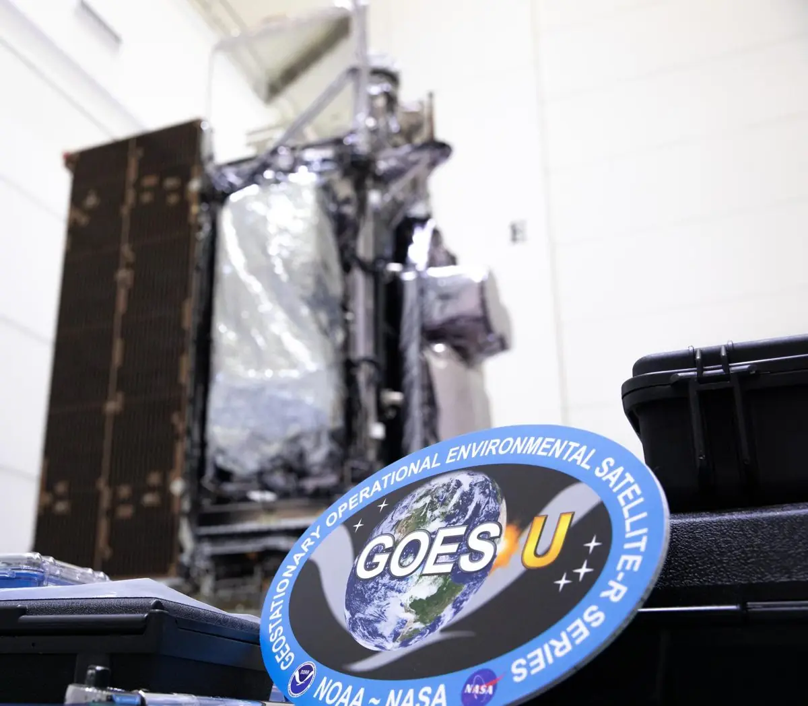
Image : NASA/KSC
CCOR-1 de GOES-19 est le premier coronographe spatial opérationnel au monde, qui photographie la couronne solaire toutes les 15 minutes.
Page : GOES-19 et CCOR-1 (NOAA)
Source : NOAA SWPC, CCOR-1 coronagraph
Un désert nourrit une forêt tropicale
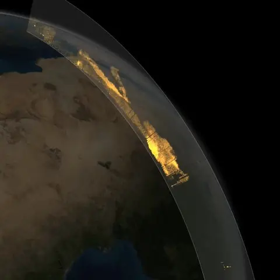
Image : NASA's Goddard Space Flight Center
Environ 27,7 millions de tonnes de poussière saharienne tombent sur l'Amazonie chaque année, de quoi remplir 104 908 semi-remorques.
Page : La poussière du Sahara nourrit l'Amazonie
Source : NASA, Saharan dust feeds the Amazon
Une douzaine de photons reviennent
Image : NASA/Bill Ingalls
Le laser d'ICESat-2 émet 10 000 impulsions par seconde, chacune contenant environ 300 000 milliards de photons, et seule une douzaine revient au satellite.
Page : ICESat-2 (NASA)
Source : NASA, ICESat-2
Une forêt qui fait la pluie
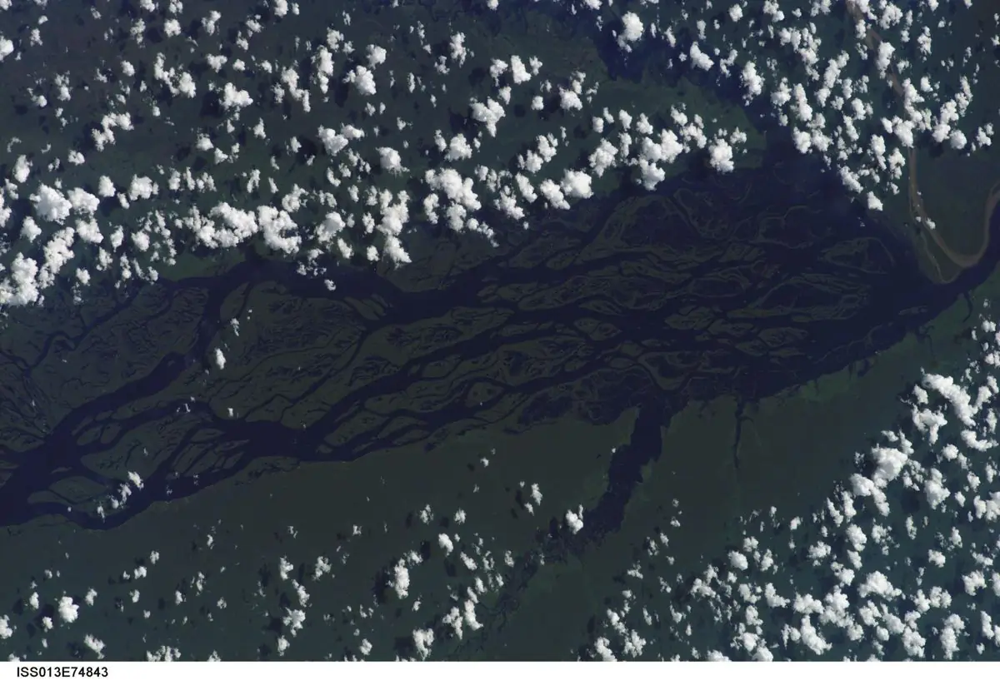
Image : NASA (ISS013-E-74843)
Les arbres d'Amazonie déclenchent leur propre saison des pluies deux à trois mois avant l'arrivée des pluies venues de l'océan.
Page : L'Amazonie crée sa propre saison des pluies
Source : NASA JPL, the Amazon makes its own rainy season
Une alerte d'une demi-heure depuis un million de miles
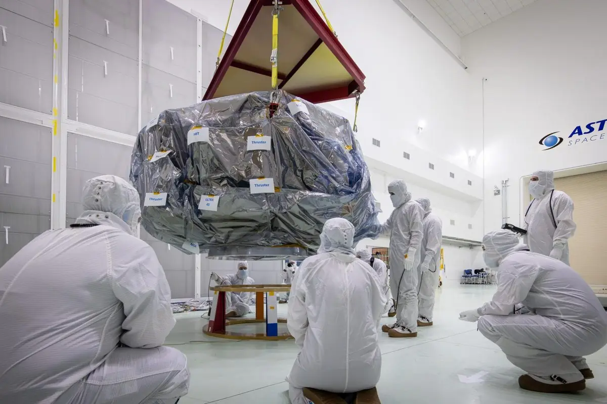
Image : NASA/KSC
Depuis environ un million de miles en direction du Soleil, IMAP de la NASA peut donner aux astronautes et aux engins proches de la Terre environ une demi-heure d'avance sur les radiations entrantes.
Page : IMAP (NASA)
Source : NASA, IMAP mission
Un million de lacs vus de l'orbite
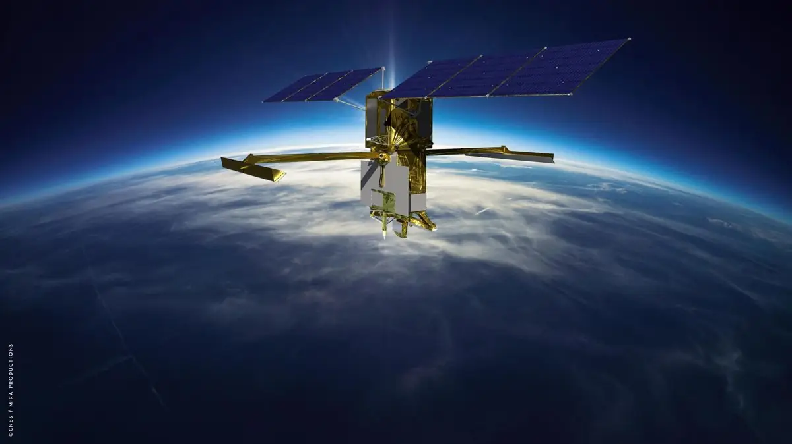
Image : NASA/JPL-Caltech
SWOT (NASA–CNES) surveille le niveau de l'eau de plus d'un million de lacs de plus de 15 acres.
Page : SWOT (NASA–CNES)
Source : NASA Earthdata, SWOT data release
Un quart de million de coraux replantés
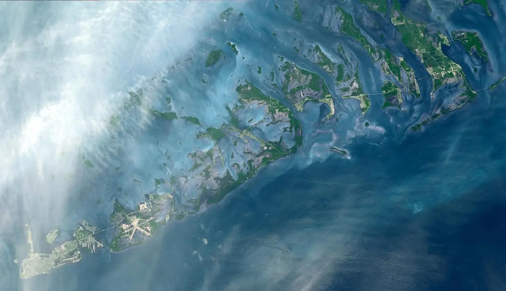
Image : NASA/JPL
Coral Restoration Foundation avait rendu 253 833 coraux issus de pépinières aux récifs de Floride fin 2024 (chiffre de l'organisation).
Page : Coral Restoration Foundation
Source : Coral Restoration Foundation, 2024 annual report (organization figure)
Un satellite en bois
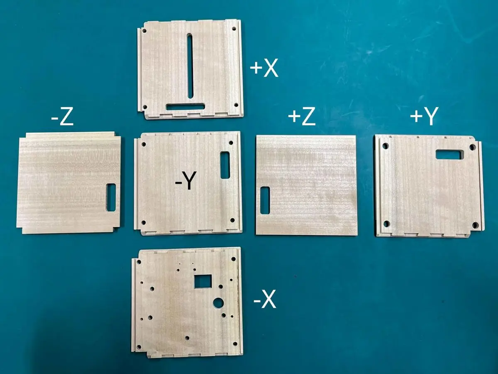
Image : Kyoto University via NASA
LignoSat, le premier satellite en bois au monde, a été construit en panneaux de magnolia assemblés selon une technique japonaise traditionnelle sans colle ni clous.
Page : Satellite en bois LignoSat (Kyoto University)
Source : NASA, JAXA’s first wooden satellite deploys
Les castors doublent les poissons
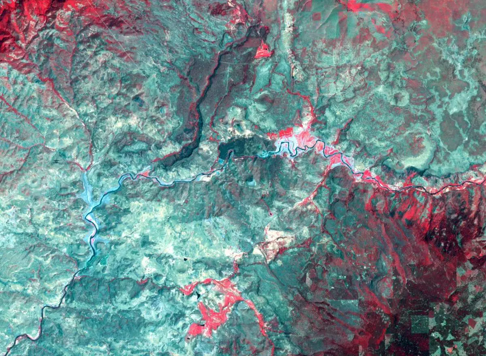
Image : NASA (PIA26448, Klamath River, Oregon and California)
À Bridge Creek, en Oregon, les barrages de castors ont fait bondir la survie des jeunes truites de 52 % et leur production de 175 %.
Page : Les castors, ingénieurs des rivières
Source : NOAA Fisheries, Oregon beavers engineer better fish habitat
Plus près que nos satellites
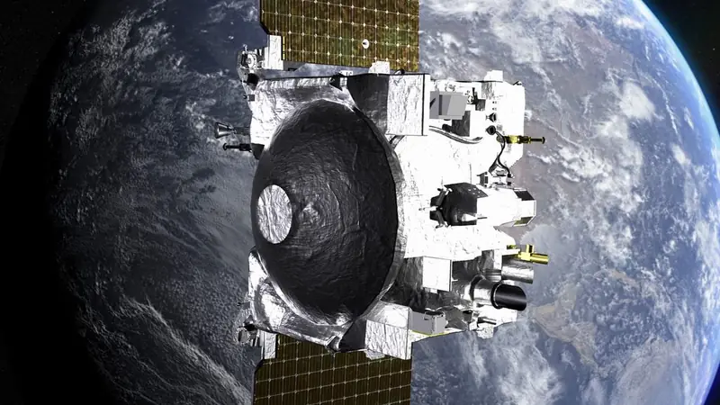
Image : NASA
Le 13 avril 2029, l'astéroïde Apophis passera à environ 20 000 miles de la Terre, plus près que de nombreux satellites géosynchrones.
Page : OSIRIS-APEX et Apophis 2029 (NASA)
Source : NASA, Asteroid Apophis
Nuages en mouvement
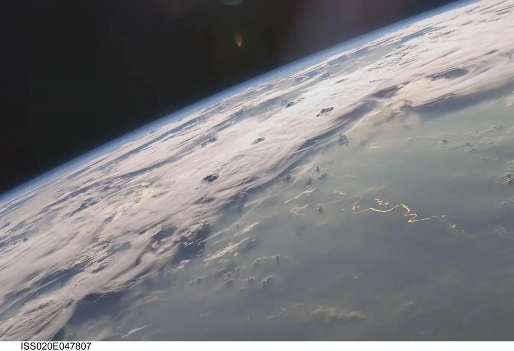
Image : NASA
EarthCARE emporte le premier radar à nuages dans l'espace capable de mesurer la vitesse verticale des particules nuageuses.
Page : EarthCARE (ESA–JAXA)
Source : JAXA, EarthCARE Cloud Profiling Radar
Gardes du corps du littoral
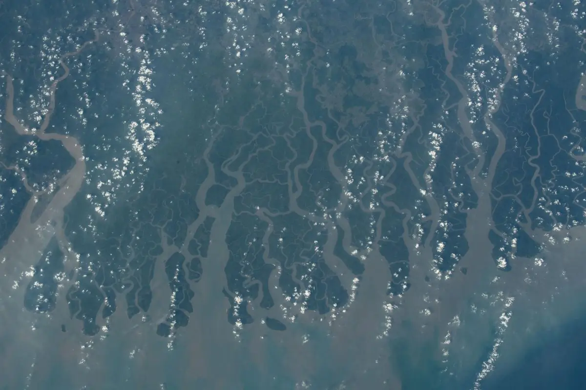
Image : NASA
Il existe environ 80 espèces de palétuviers, et leurs racines enchevêtrées aident à protéger les côtes des ondes de tempête.
Page : Forêts de mangroves
Source : NOAA, What is a mangrove forest?
Le halo ultraviolet de la Terre
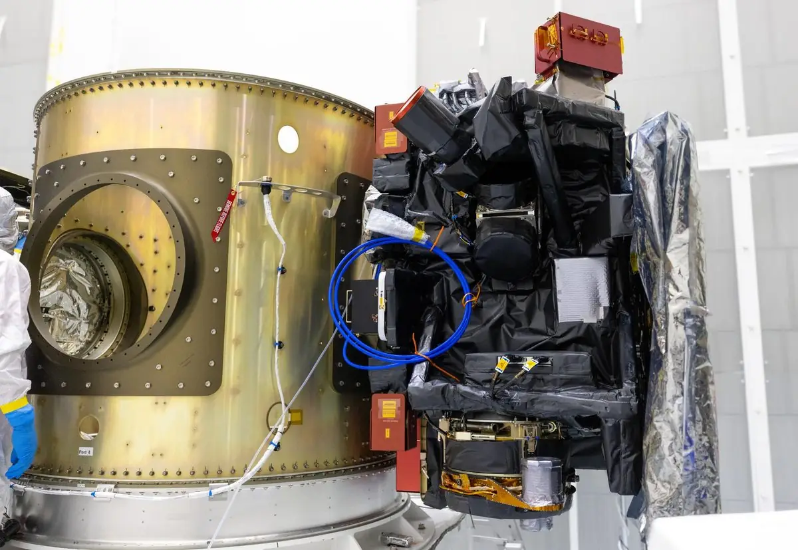
Image : NASA/KSC
La Terre porte un faible halo ultraviolet, la géocouronne, photographiée pour la première fois depuis la Lune par Apollo 16 en 1972 ; la mission Carruthers de la NASA la cartographie aujourd'hui depuis un million de miles.
Page : Carruthers Geocorona Observatory (NASA)
Source : NASA, Carruthers Geocorona Observatory
Dix-huit pouces par jour
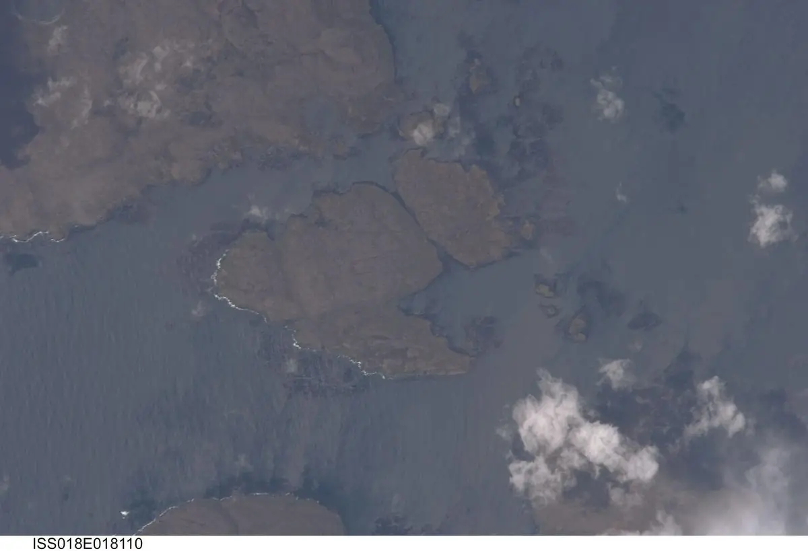
Image : NASA (ISS018-E-018110)
Dans des conditions idéales, le varech peut pousser jusqu'à 18 pouces en une seule journée.
Page : Forêts de varech
Source : NOAA, What is a kelp forest?
Une respiration sur deux
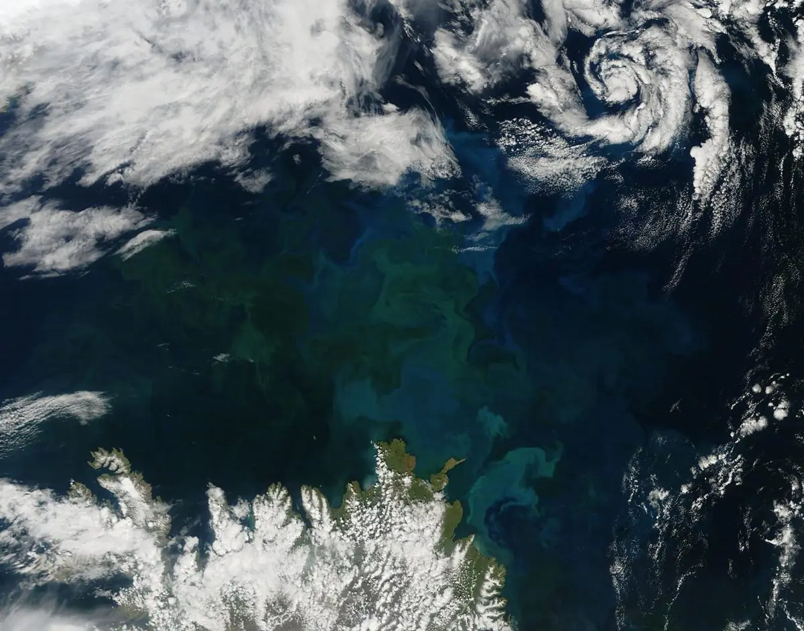
Image : NASA
Environ la moitié de l'oxygène de la Terre vient de l'océan, en grande partie produit par le minuscule phytoplancton.
Page : Le phytoplancton, moteur à oxygène de l'océan
Source : NOAA, How much oxygen comes from the ocean?
Le plus loin où des humains sont allés
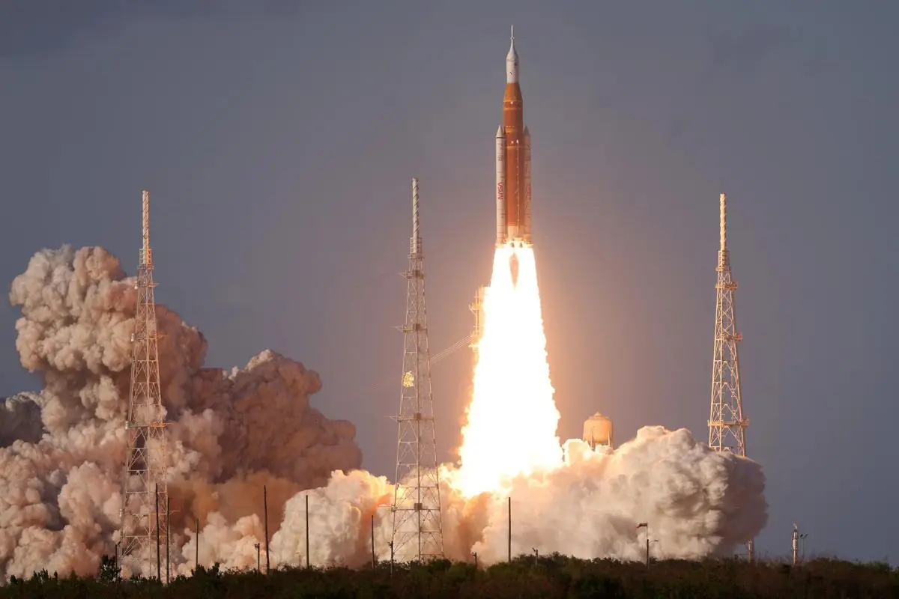
Image : NASA
L'équipage d'Artemis II a atteint 252 756 miles de la Terre le 6 avril 2026, la plus grande distance jamais parcourue par des humains.
Page : Programme Artemis
Source : NASA, Artemis II crew back on Earth
Cinq cents tonnes par an
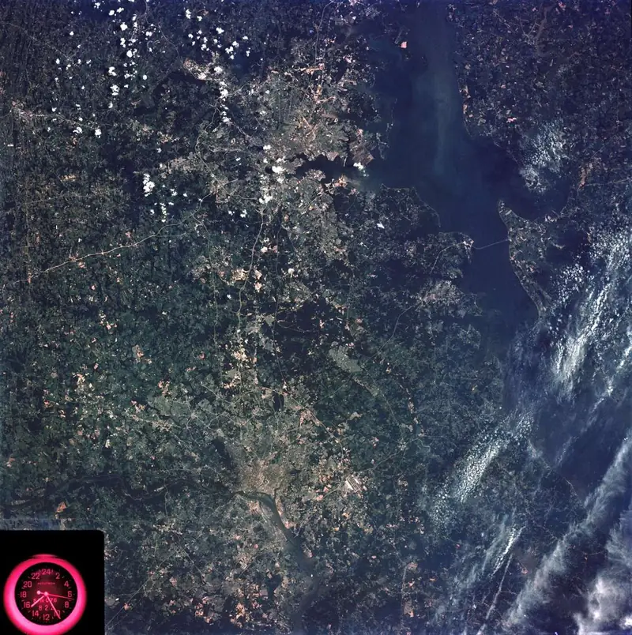
Image : NASA
Les quatre Trash Wheels de Baltimore collectent environ 500 tonnes de déchets et de débris dans le port chaque année (chiffre de l'organisation).
Page : La famille Mr. Trash Wheel
Source : Mr. Trash Wheel, trash interception (organization figure)
La nurserie de la côte
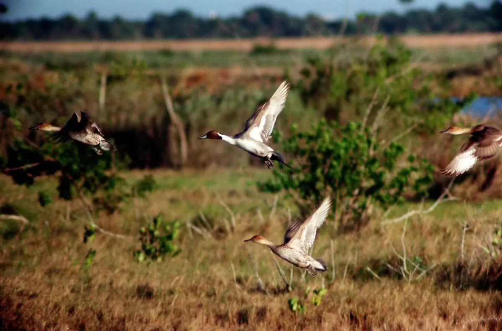
Image : NASA/KSC (KSC-99WL10)
Les marais salés offrent nourriture, refuge ou nurserie à plus de 75 % des espèces pêchées, dont les crevettes et le crabe bleu.
Page : Marais salés
Source : NOAA Ocean Service, What is a salt marsh?
Mille rivières

Image : NASA/USGS Landsat, delta de la Lena
Environ 1 000 rivières apportent l'essentiel du plastique fluvial qui atteint l'océan, selon une étude de Science Advances sur le plastique fluvial.
Source : Meijer et al., Science Advances 2021
De la place pour 1 300 Terres
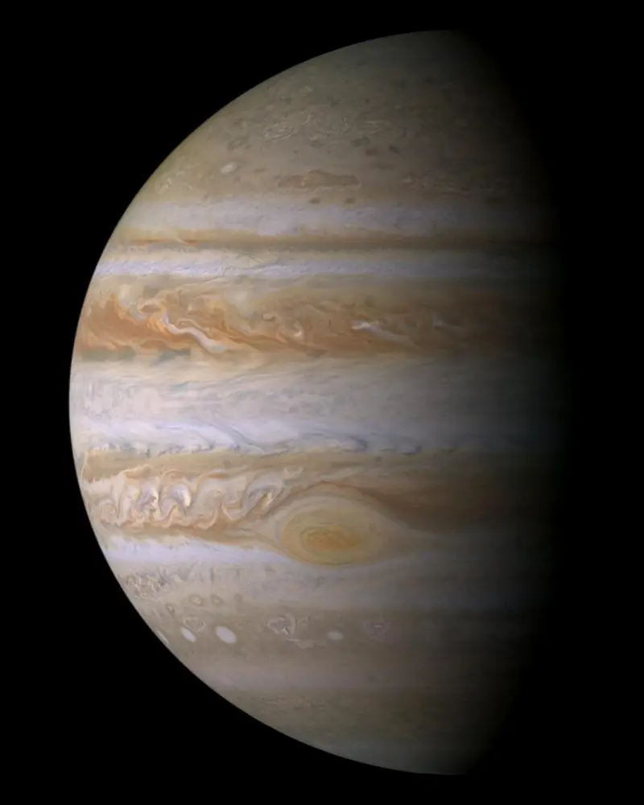
Image : NASA/JPL/University of Arizona, Cassini
On pourrait faire tenir environ 1 300 Terres dans Jupiter (environ 1 321 en volume).
Page : Jupiter : le bouclier naturel de la Terre contre les débris
Source : NASA Jupiter Fact Sheet
Soixante-cinq millions de kilogrammes

Image : NASA, Station spatiale internationale
The Ocean Cleanup déclarait 65 millions de kilogrammes de plastique retirés en octobre 2026 — sa meilleure année a été 2025, avec 27 millions de kilogrammes à elle seule.
Source : The Ocean Cleanup (chiffre de l'organisation) · 2025 in review
Petites prairies, grand carbone
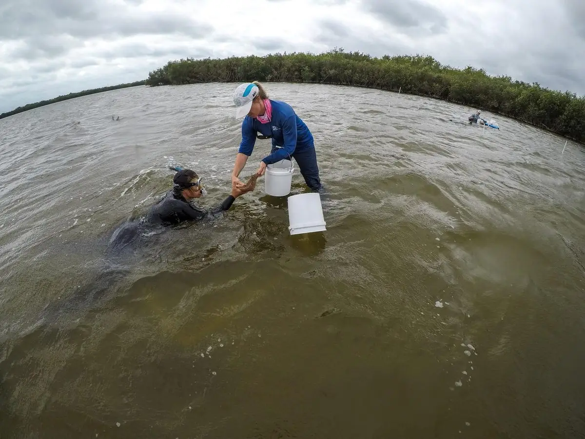
Image : NASA/KSC
Les herbiers ne couvrent que 0,1 % des fonds marins du monde mais stockent 11 % du carbone organique enfoui dans l'océan.
Page : Herbiers marins
Source : NOAA, Blue carbon fast facts
La Lune garde nos saisons stables
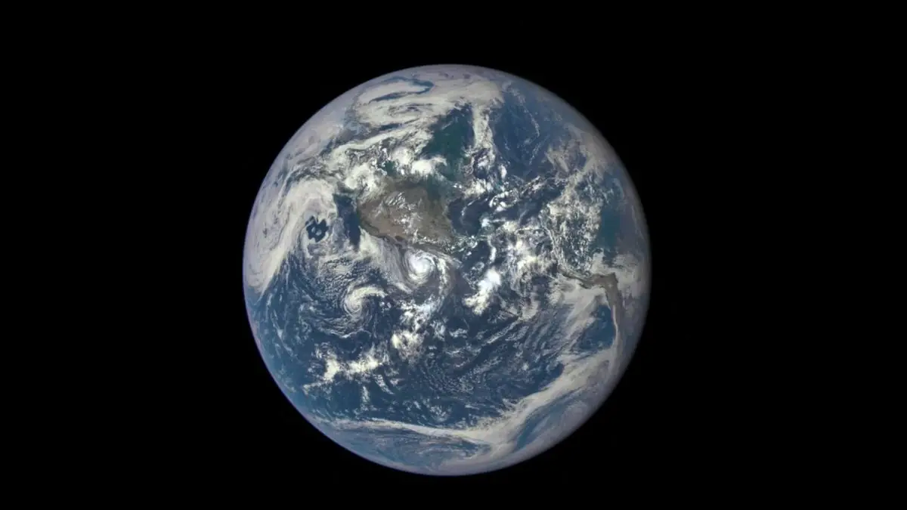
Image : NASA/NOAA DSCOVR EPIC
L'inclinaison de 23,5 degrés de la Terre est maintenue par la Lune ; sans elle, la Terre pourrait osciller bien plus violemment, bouleversant le climat.
Moins de la moitié en essence seule
Les voitures qui roulent uniquement à l’essence sont tombées à 49 % des ventes mondiales de voitures neuves au premier semestre 2026, pour la première fois sous la moitié (données Mobility Global via Nikkei).
Attention : les hybrides brûlent encore du carburant, donc environ 83 % des voitures neuves ont encore un moteur thermique, et ce chiffre porte sur six mois marqués par une flambée du pétrole.
la planète Tableau des scores
Les totaux cumulés des solutions de ce site. Touchez un chiffre pour voir la solution derrière.
Source : Life Terra (chiffre de l'organisation) · En mai 2026
Source : The Ocean Cleanup (chiffre de l'organisation) · En octobre 2026
Faites partie de la la différence
Le plastique, les forêts et l'énergie sont des problèmes que nous pouvons résoudre ensemble. Envoyer une idée ou partagez une solution que vous connaissez. Si votre solution correspond à nos critères de solution, nous serions ravis de présenter votre solution sur notre site. Si vous souhaitez faire un don, consultez notre page Solutions et choisissez celle qui correspond à vos centres d'intérêt.